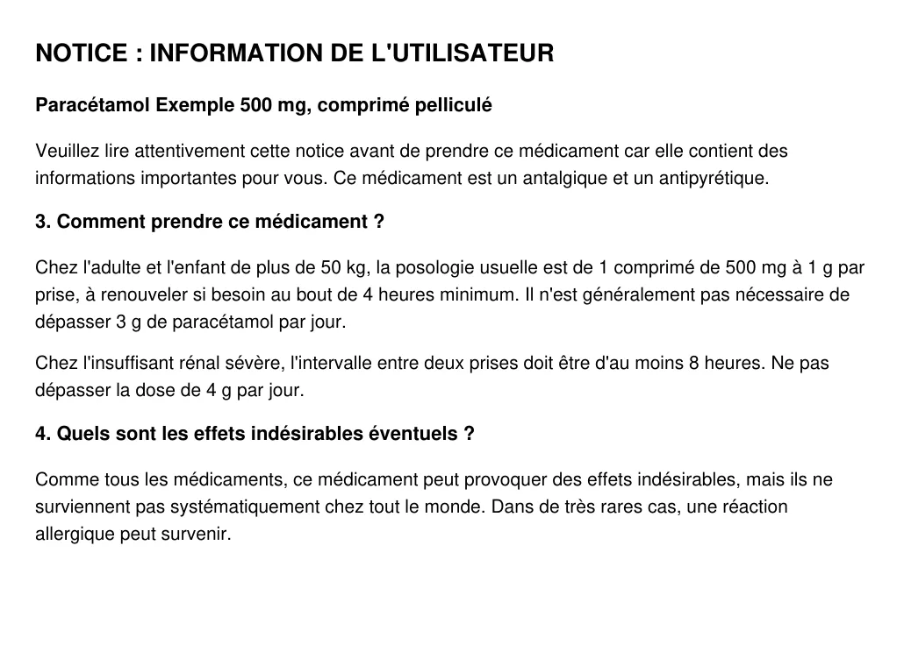
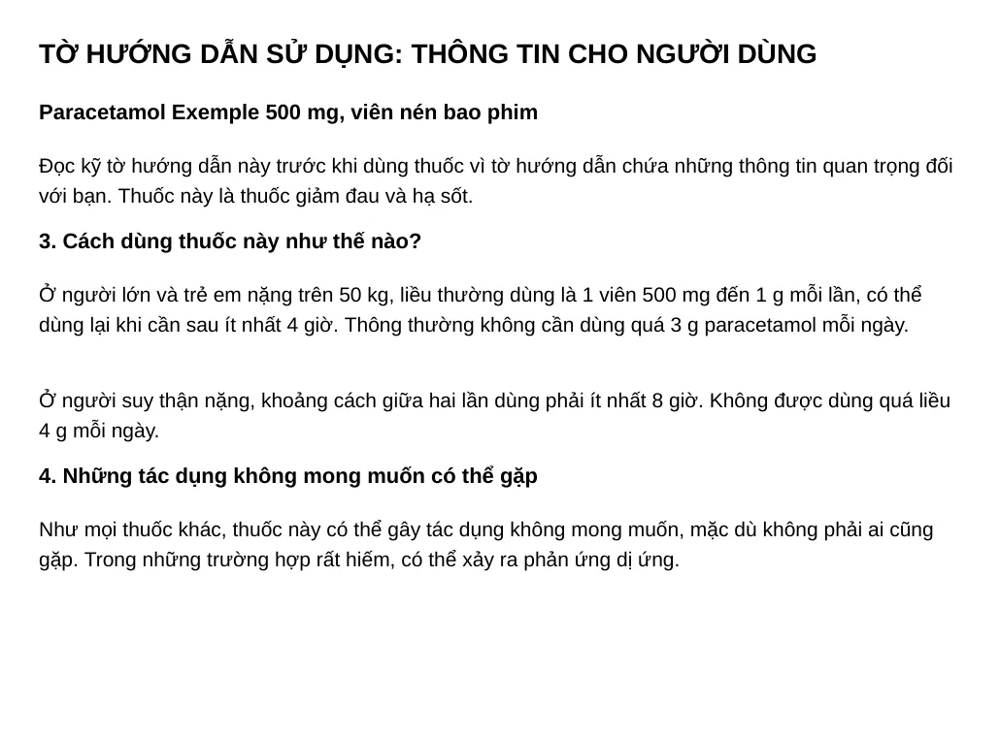

Bản Y Dược · Anh → Việt · Pháp → Việt · Windows và web
Dịch tài liệu thuốc sang tiếng Việt, giữ đúng từng liều
Tờ hướng dẫn sử dụng, tóm tắt đặc tính sản phẩm, phác đồ, bài báo lâm sàng bằng tiếng Anh hoặc tiếng Pháp. Bản dịch nằm đúng chỗ trên trang gốc. Mỗi con số, mỗi đơn vị đo được đối chiếu với bản gốc; đoạn nào lệch thì phiếu kiểm định chưa cho kết luận đạt.
Chạy thật trên bộ máy v3.3
Một tờ hướng dẫn tiếng Pháp, trước và sau
Để thử, bản dịch được cố ý sửa “4 g par jour” thành “2 g mỗi ngày”. Bộ máy bắt được ngay khi nạp: p1-6: liều hoặc đơn vị đo có thể bị thay đổi (4 g), và phiếu kiểm định ghi CHƯA ĐẠT cho tới khi sửa lại đúng.


Tờ hướng dẫn trên là mẫu dựng để thử, không phải tài liệu của một thuốc đang lưu hành.
Cùng bộ máy, thêm lớp kiểm cho ngành Y Dược
Khác gì bản thường
Dịch từ tiếng Pháp
Ngoài Anh → Việt, bản này nhận và dịch Pháp → Việt. Tài liệu được tự nhận ngôn ngữ; số kiểu Pháp như 1 000 UI hay 2,5 mg giữ nguyên giá trị.
Anh → Việt · Pháp → Việt · Việt → AnhQuy tắc dịch riêng cho thuốc
AI nhận thêm quy tắc: không quy đổi, không làm tròn liều; tên hoạt chất theo tên chung quốc tế như Dược thư Quốc gia; tên Latin và viết tắt chuyên môn giữ nguyên; không làm nhẹ cảnh báo.
Contre-indications → Chống chỉ địnhBộ thuật ngữ tự bật theo chiều dịch
46 thuật ngữ Anh – Việt và 46 thuật ngữ Pháp – Việt: tên mục của tờ hướng dẫn, dạng bào chế, đường dùng, mức tần suất tác dụng không mong muốn. Bạn thêm thuật ngữ của khoa, của công ty mình; khi trùng, cách dịch của bạn được dùng.
Từ điển thuật ngữ → Y Dược Pháp → Việt (46)Kiểm từng liều và đơn vị đo
Mọi cặp số và đơn vị (mg, µg, mL, UI, mmol, %…) trong bản gốc phải có mặt trong bản dịch; µg và mcg, UI và IU được coi là một. Đoạn lệch được đánh dấu để dịch lại và chặn kết luận ĐẠT.
| Liều, hàm lượng, đơn vị đo khớp bản gốc | ✘ Cần sửa | 1 đoạn lệch |Chân trang nói rõ giới hạn
Mỗi trang bản dịch có dòng nhỏ: bản dịch AI để tham khảo, không thay thế tờ hướng dẫn gốc hay chỉ định của bác sĩ.
Bản dịch AI để tham khảo · không thay thế tờ hướng dẫn gốc…
Khoảng năm phút
Cài trên Windows
Tải và chạy file cài
Bấm nút tải ở đầu trang, mở file PDF-Layout-VI-YDuoc-…-setup.exe. Windows có thể hiện cảnh báo SmartScreen vì ứng dụng chưa mua chứng thư ký số; bấm “More info” rồi “Run anyway”. Bản Y Dược cài song song được với bản Studio.
More info → Run anywayChọn AI sẽ dịch
Mở mục Kết nối AI, chọn công cụ đã đăng nhập trên máy (Claude Code, Codex, Gemini CLI), hoặc dán khóa Gemini API, OpenRouter. Với hồ sơ có thông tin người bệnh, chọn Ollama để chữ không rời máy.
Kết nối AI → Đặt làm nền tảng chínhKéo PDF vào và bấm dịch
Lĩnh vực Y Dược đã bật sẵn. Ứng dụng tự nhận tiếng Anh hay tiếng Pháp, dịch từng lô, dựng PDF và lập phiếu kiểm định. Đoạn nào cần sửa, bấm vào bản dịch để sửa tay rồi dựng lại.
Dịch PDF Studio → Chọn PDF → Bắt đầu dịch
Hỏi đáp
Dùng bản dịch này để kê đơn, cấp phát thuốc được không?
Không. Bản dịch là bản đọc hiểu do AI tạo. Liều dùng, chỉ định, chống chỉ định luôn phải đối chiếu với tờ hướng dẫn sử dụng đã được cấp phép, phác đồ chính thức và người có chuyên môn. Bộ kiểm liều giảm rủi ro sai số, không thay được việc người có chuyên môn đọc lại.
Tài liệu có bị gửi đi đâu không?
File PDF được mở và dựng lại ngay trên máy bạn. Phần chữ cần dịch được gửi tới AI bạn chọn, theo chính sách của nhà cung cấp đó. Nếu tài liệu có thông tin người bệnh, dùng Ollama chạy trên máy để chữ không ra khỏi máy tính.
Bộ kiểm liều bắt được những gì?
Số đi kèm đơn vị đo: mg, µg/mcg, ng, g, kg, mL, L, UI/IU, mEq, mmol, µmol, mmHg và %. Trong chế độ Y Dược, đoạn chỉ có một con số cũng được kiểm. Bộ kiểm không hiểu nghĩa câu: AI dịch sai “trước bữa ăn” thành “sau bữa ăn” thì bộ kiểm không biết, nên vẫn cần người đọc lại.
PDF nào dịch được?
PDF có lớp chữ, tức bôi đen được chữ. PDF scan dạng ảnh chụp cần nhận dạng chữ (OCR) trước, phiên bản này chưa làm bước đó.
Có phải trả tiền không?
Ứng dụng miễn phí, mã nguồn mở. Việc dịch dùng hạn mức tài khoản AI bạn đang có.